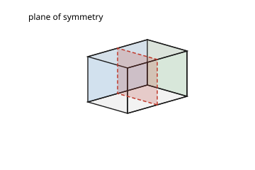

Based on Cambridge IGCSE Mathematics Core and Extended Coursebook (Karen Morrison and Nick Hamshaw), Chapter 19. The wording is original and follows the published section titles and the standard Cambridge IGCSE treatment of the topic. Printed pp.649–650.
Key words: plane of symmetry, axis of rotational symmetry
A solid has a plane of symmetry if the plane cuts the solid into two parts that are mirror images of each other. A cuboid with all three dimensions different has three planes of symmetry, each parallel to a pair of faces and passing through the centre. A cube has nine planes of symmetry: three like those of a cuboid, and six that cut the cube along diagonals of faces. A square-based pyramid has four planes of symmetry if the four triangular faces are congruent, each containing the apex and a line of symmetry of the base.

A solid has an axis of rotational symmetry if it looks the same after a rotation of less than one full turn about that axis. The order is counted in the same way as in two dimensions. A cube has axes of order \(4\) through the centres of opposite faces, axes of order \(3\) through opposite vertices, and axes of order \(2\) through the midpoints of opposite edges. A cylinder has an axis of rotational symmetry along its length: it looks the same after any rotation about that axis. It also has a plane of symmetry through mid-height, perpendicular to the axis, and infinitely many planes of symmetry that contain the axis.
Coursebook, 19.2, cuboid style. A cuboid with all three edge lengths different.
How many planes of symmetry does a cuboid have if all three edge lengths are different?
Answer: \(3\)
Coursebook, 19.2, cube style.
How many planes of symmetry does a cube have?
Answer: \(9\)
There is no whole past-paper question on this subsection alone.
How many planes of symmetry does a square-based pyramid have if the four triangular faces are congruent?
Answer: \(4\)
How many planes of symmetry does a right prism with an equilateral triangular cross-section have?
Answer: \(4\)
A right prism has a regular pentagonal cross-section and is not a cube. How many planes of symmetry does it have?
Answer: \(6\)